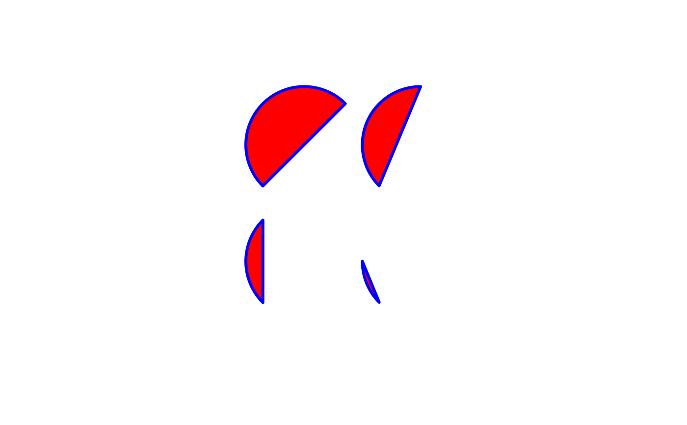

Draw circles in a flexible way.
circles(x, y = x, radi = 1, from = 0, to = 2 * pi, incr = 0.01, pie = FALSE, clockwise = FALSE, add = TRUE, ...)
| x | the x coordinates of the centers of the circles. |
|---|---|
| y | the y coordinates of the centers of the circles. |
| radi | the radii of the circles. |
| from | the angles, expressed in radians, from which circles are drawn. |
| to | the angles, expressed in radians, to which circles are drawn. |
| incr | increments between two points to be linked (expressed in radians). |
| pie | a logical. If |
| clockwise | a logical. Shall circles and arcs be drawn clockwise? Defaut is `FALSE`. |
| add | a logical. Should the circles be added on the current plot? |
| ... | additional arguments to be passed to |
An invisible list of data.frame of two columns including the
coordinates of all circles.
The number of circles drawn is given by the maximum argument length amng
x, y, radi, from and to arguments.
Sizes are adjusted (i.e. repeated over) with rep_len function.
# Example 1: plot0()circles(x = 0)# Example 2: plot0()circles(x=-.5, radi=0.45, from=0.5*pi, to=0.25*pi)circles(x=.5, radi=0.45, from=0.5*pi, to=0.25*pi, pie=TRUE)circles(x=.5, y = -.5, radi=0.45, from=0.5*pi, to=0.25*pi, pie=TRUE, clockwise = TRUE)# Example 3: plot0()circles(x=c(-1,1),c(1,1,-1,-1),from=pi*seq(0.25,1,by=0.25),to=1.25*pi, col=2, border=4, lwd=3)